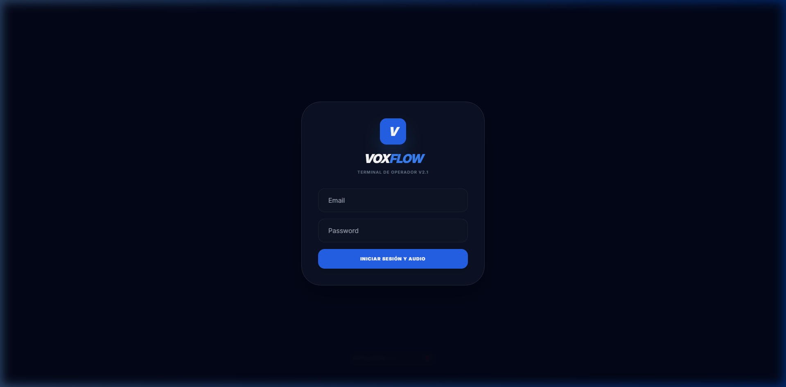
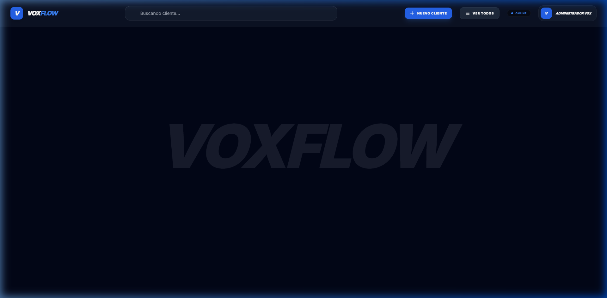
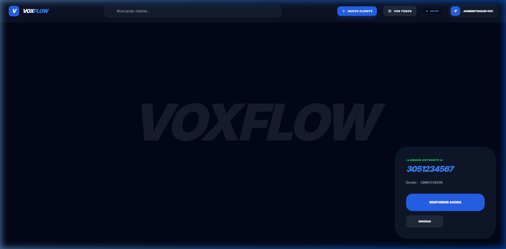
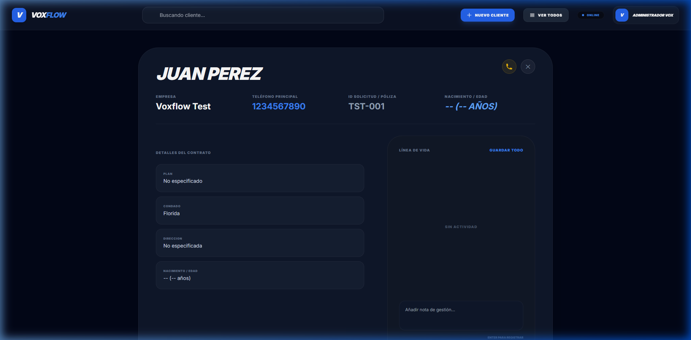
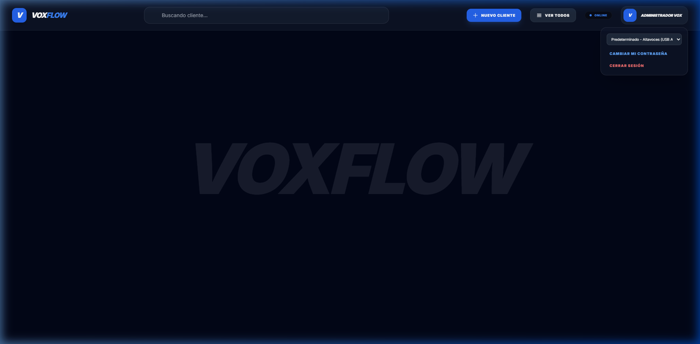

Guía de Usuario: VOXFLOW Operator Console
Bienvenido a VOXFLOW, la plataforma premium para la gestión de llamadas y CRM de alta eficiencia. Esta guía te ayudará a dominar todas las herramientas disponibles para ofrecer una atención excepcional.
Para garantizar la mejor calidad de audio y cancelación de ruido durante tus llamadas, se recomienda encarecidamente el uso de auriculares y micrófono profesionales dedicados (Headset).
🟢 1. Estado de Conexión y Acceso
Para comenzar a recibir llamadas, es obligatorio que el sistema esté correctamente vinculado.
Acceso Inicial
- Ingresa tus credenciales en el portal de acceso.
- Haz clic en INICIAR SESIÓN Y AUDIO.

El Indicador de Estado (Crítico)
En la parte superior derecha verás un indicador de estado.
El LED debe decir siempre "ONLINE" (Círculo azul).
Si el LED cambia a "OFFLINE" (Círculo gris), no podrás recibir ni realizar llamadas.
Acción: Contactar a soporte técnico de Planificalo inmediatamente si el estado Offline persiste por más de 30 segundos.

📞 2. Gestión de Llamadas Entrantes
Cuando entra una llamada, aparecerá un panel flotante con la información en tiempo real.
El Panel de Llamada
- Número DID (Azul): Indica a qué línea de Voxflow están llamando.
- De: Muestra el número de teléfono del cliente que llama.

Acciones Disponibles
- RESPONDER AHORA: Atiende la llamada inmediatamente.
- IGNORAR: Rechaza la llamada en tu terminal para que salte al siguiente operador disponible.
👥 3. Gestión de Clientes (CRM)
VOXFLOW permite gestionar la base de datos de clientes de forma dinámica.
Buscar y Ver Fichas
Busca clientes por nombre o teléfono desde la barra superior. Al abrir una ficha, tendrás acceso al historial completo.

- Notas Rápidas: Añade comentarios sobre la llamada actual.
- Historial: Revisa interacciones previas.
⚙️ 4. Perfil y Configuración Personal
Haz clic en tu nombre de usuario para desplegar el menú de configuración.

Funciones Clave:
- Selector de Audio: Elige tus auriculares o altavoces.
- Cambiar contraseña: Actualiza tu clave de acceso.
- Cerrar Sesión: Finaliza tu turno de forma segura.
🆘 Soporte Técnico
Si experimentas problemas con el audio o la conexión:
- Verifica que tienes conexión a Internet.
- Asegúrate de que el LED superior esté en ONLINE.
- Refresca la página (F5).
- Contacta al administrador si el problema persiste.